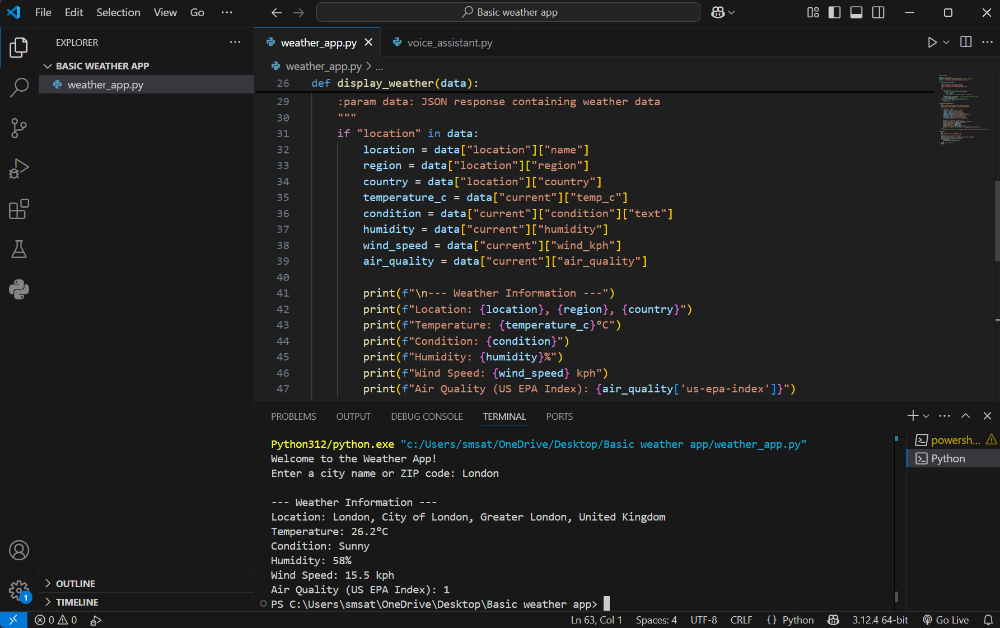

Tools: Python, Jupyter Notebook, TensorFlow/Keras, OpenCV
Role: ML Developer
Goal: Build a machine learning model to detect plant diseases from leaf images.
Learned how to implement deep learning for image classification.
Gained experience in data preprocessing, model evaluation, and real-world agricultural applications.
Tools: Python, Requests, OpenWeatherMap API, Tkinter (optional for GUI)
Role: Python Developer
Goal: Create a simple app to fetch real-time weather data for any city.
Strengthened skills in API integration and working with real-time data.
Improved understanding of user inputs, responses, and Python UI design.

← Back to Portfolio